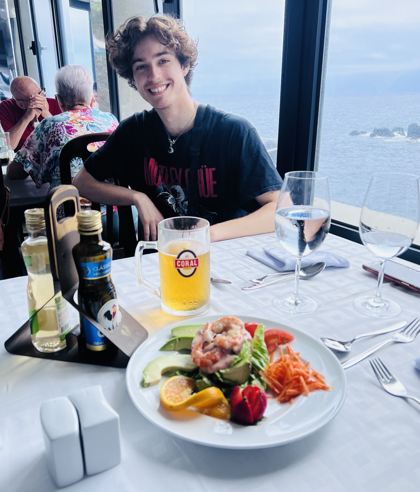

Quem sou eu:
Bem-vindo a todo mundo! Chamo-me Zach Martim e sou um estudante da Universidade de Utah. Sou estudante de Ciência da Computação e espero me tornar um engenheiro de software. Eu fiz cinco aulas de português, 101 e 102 na BYU e 2010, 2020, e 3060 na UofU. Quero continuar meu progresso de português em aulas futuras e desenvolver melhores habilidades de conversação. Adoro aprender sobre a cultura dos brasileiros e suas histórias. Eu espero que um dia eu serei fluente em português. Talvez eu vou ter um acento do brasileiro e surpresa minha família em Portugal. Se eu pudesse utilizar meu progresso em português para áreas diferentes na minha vida, como em meu trabalho ou tive conversações com pessoas em português, eu estaria muito feliz.
